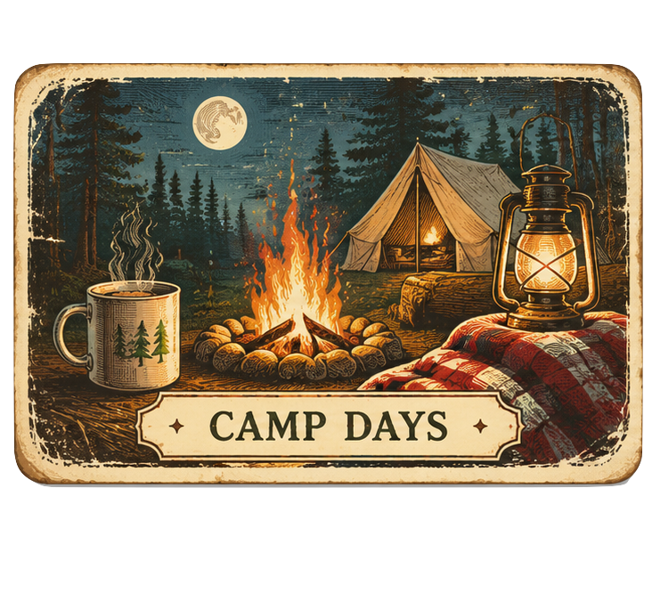
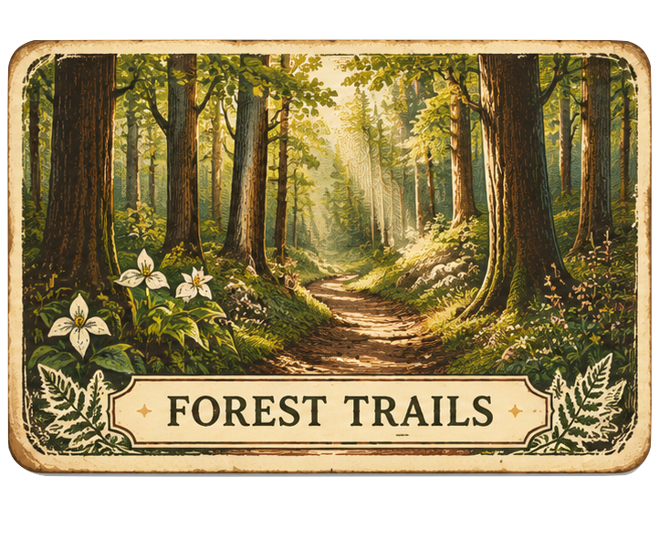
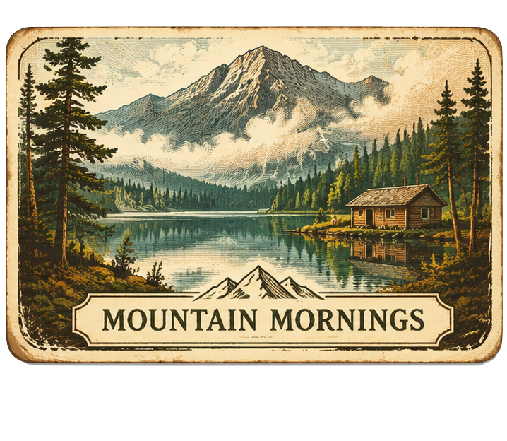

A personal cabinet of curiosities · North Georgia & beyond
The Curiosity
Dispatch
A little strange. A lot interesting. Fascinating local stories, scientific discoveries, medical frontiers, hidden history and roads worth taking the long way around.
Loading stories…


Editor's desk · Fresh finds
Top 5 most fascinating stories
A rotating selection of the newest discoveries. Headlines link to their original publishers.

Latest dispatches
A little shelf of interesting things, not an endless scroll. Pick a story, follow a curiosity, and come back for more whenever you like. ✦
The Explorer's Atlas
Forgotten places & the long way home
Use these research starting points to find publicly accessible destinations and scenic routes. Verify current access, road conditions and property rules before visiting. Never enter abandoned structures or private property without permission.
Postcards from the mountains ✷
A little Appalachian summer-camp atmosphere for the next detour.


